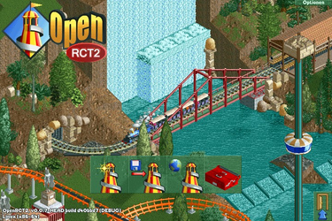
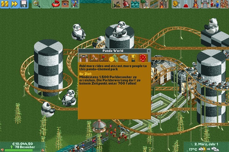
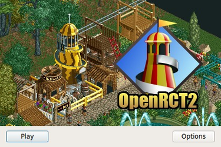

OpenRCT2
Dieser Artikel wurde für die folgenden Ubuntu-Versionen getestet:
Ubuntu 16.04 Xenial Xerus
Ubuntu 14.04 Trusty Tahr
Zum Verständnis dieses Artikels sind folgende Seiten hilfreich:
RollerCoaster Tycoon (kurz RCT) ist eine Aufbausimulation bei ein Freizeitpark erschaffen werden kann. Namensgebend war die Hauptfunktion mit der Achterbahnen selbst aus Schienen zusammengestellt werden können und das Design einen Einfluss auf die Fahrgäste hat.
Es war der nächste große Erfolg des schottischen Spiele-Entwicklers Chris Sawyer und zog daher wie Transport Tycoon mit OpenTTD ein quelloffenenes Reimplementierungsprojekt namens OpenRCT2 an, das es sich zum Ziel gemacht die Limitierungen des Originals zu entfernen und das ursprünglich nur für Microsoft Windows veröffentlichte Spiel auch auf anderen Betriebssystemen lauffähig zu machen sowie moderne Funktionen wie einen Mehrspielermodus einzubauen.
|  |  |
| Menü | Panda World |
Installation¶
Das Projekt ist noch stark in der Entwicklung. Man kann sich entscheiden ob man auf einer stabilen Veröffentlichung (master) oder dem Entwicklerzweig (develop) spielen möchte.
Archiv¶
Um das Archiv verwenden zu können muß man im Vorfeld die folgenden Pakete installieren [1]:
cmake
libsdl2-dev
libsdl2-ttf-dev
gcc
pkg-config
libjansson-dev
libspeex-dev
libspeexdsp-dev
libcurl4-openssl-dev
libcrypto++-dev
libfontconfig1-dev
libfreetype6-dev
libpng-dev
libssl-dev
libzip-dev
 mit apturl
mit apturl
Paketliste zum Kopieren:
sudo apt-get install cmake libsdl2-dev libsdl2-ttf-dev gcc pkg-config libjansson-dev libspeex-dev libspeexdsp-dev libcurl4-openssl-dev libcrypto++-dev libfontconfig1-dev libfreetype6-dev libpng-dev libssl-dev libzip-dev
sudo aptitude install cmake libsdl2-dev libsdl2-ttf-dev gcc pkg-config libjansson-dev libspeex-dev libspeexdsp-dev libcurl4-openssl-dev libcrypto++-dev libfontconfig1-dev libfreetype6-dev libpng-dev libssl-dev libzip-dev
Anschließend die aktuelle Spieleengine von der Projektseite 
 herunterladen. Für 64-Bit Linux x86_64 nehmen - ansonsten Linux x86 und entpacken [5] (z.B. ~/Spiele/RCT2). Im nächsten Schritt werden die Spieledateien benötigt.
herunterladen. Für 64-Bit Linux x86_64 nehmen - ansonsten Linux x86 und entpacken [5] (z.B. ~/Spiele/RCT2). Im nächsten Schritt werden die Spieledateien benötigt.
PPA¶
Alternativ bieten die Entwickler ein PPA an.
Adresszeile zum Hinzufügen des PPAs:
ppa:openrct2/nightly
Hinweis!
Zusätzliche Fremdquellen können das System gefährden.
Ein PPA unterstützt nicht zwangsläufig alle Ubuntu-Versionen. Weitere Informationen sind der  PPA-Beschreibung des Eigentümers/Teams openrct2 zu entnehmen.
PPA-Beschreibung des Eigentümers/Teams openrct2 zu entnehmen.
Damit Pakete aus dem PPA genutzt werden können, müssen die Paketquellen neu eingelesen werden.
Spieledateien¶
OpenRCT2 benötigt Dateien des Originalspiels insbesondere die Grafiken und Soundeffekte.
Digitale Distribution¶
Bezieht man RollerCoaster Tycoon 2 von gog.com und installiert es mit Wine so muss die Konfigurationsdatei ~/.config/OpenRCT2/config.ini mit einem Editor [2] geöffnet und entsprechend bearbeitet werden:
1 2 | [general] game_path = "~/.wine/drive_c/GOG Games/RollerCoaster Tycoon 2 Triple Thrill Pack/" |
Alternativ gelangt man mittels innoextract an die benötigten Dateien [3] [6]:
innoextract setup_rollercoaster_tycoon2_german_2.0.0.6.exe
Extracting "RollerCoaster Tycoon 2 Triple Thrill Pack (German)" - setup data version 5.5.0 (unicode) - "app/manual.pdf" (7.14 MiB) - "app/rct2.exe" (6.47 MiB) ... - "tmp/GOG_EULA.txt" [temp] (7.33 KiB) - "tmp/background.jpg" [temp] (135 KiB) Done.
Den Ordner tmp kann man löschen. Den Inhalt aus app verschiebt man in den zuvor angelegten Spieleordner ~/Spiele/RCT2.
Steam¶
Das Spiel ist ebenfalls unter Steam als RollerCoaster Tycoon® 2: Triple Thrill Pack für Windows verfügbar. Hier kann SteamCMD verwendet werden [3]:
steamcmd +@sSteamCmdForcePlatformType windows +login <BENUTZER> <PASSWORT> +force_install_dir ./RCT2 +app_update 285330 +quit
Spiele CD¶
Auf den Originaldatenträger befinden sich Cabinet-Dateien, die mit folgendem Befehl [3] entpackt [5] werden können:
unshield -d ~/Downloads/RCT2/ x data2.cab
Im Anschluss muss die Konfigurationsdatei ~/.config/OpenRCT2/config.ini mit einem Editor [2] geöffnet werden und der neu entstandene Pfad so dem Spiel mitgeteilt werden:
1 2 | [general] game_path = "~/Downloads/RCT2/Default_File_Group/" |
|  |
| Launcher |
Launcher¶
Ein Launcher kann von Github heruntergeladen werden. Jedoch benötigt man die folgenden Pakete um diesen nutzen zu können [1]:
zlib1g
libssl1.0.0
libqt5core5a
libqt5gui5
libqt5widgets5
libqt5network5
mit apturl
Paketliste zum Kopieren:
sudo apt-get install zlib1g libssl1.0.0 libqt5core5a libqt5gui5 libqt5widgets5 libqt5network5
sudo aptitude install zlib1g libssl1.0.0 libqt5core5a libqt5gui5 libqt5widgets5 libqt5network5
Das Archiv von der Projektseite entpacken [5] und die Datei OpenRTC2 in den Ordner der Engine verschieben. Das Spiel anschließend über diesen starten [4]. "Play" initiiert das Spiel während sich unter "Options" ein paar Konfigurationsmöglichkeiten verbergen:
| Options | |
| Reiter | Beschreibung |
| "Launcher" | Installationsverzeichnis des Spiels definieren und den Branch festlegen. |
| "Hidden Settings" | Spracheinstellungen, Fenstergröße, Bildformat der Bildschirmfotos... |
| "Multiplayer" | Einstellungen zum Serverspiel vornehmen. |
Bedienung¶
Das Spiel kann mit dem Befehl openrct2 oder über das Menü gestartet [4] werden. IM Hauptmenü gelangt man in der rechten oberen Ecke zu den "Optionen". Hier können Einstellungen an der Hardware, der Darstellung, den Audiovorgaben, der Bedienung et cetera vornehmen.
Beim ersten Start wird im Homeverzeichnis der versteckte Ordner ~/.config/OpenRCT2 angelegt.
Erweiterungen¶
Auf einigen Seiten im Internet findet man diverse Erweiterungen für das Spiel. Diese speichert man in den folgenden Ordnern:
| Erweiterungen | |
| Ordner | Beschreibung |
| Tracks | Coaster (.TD6-Dateien) |
| Saved Games | Parks bzw. Spielstände (.SV6-Dateien) |
| Scenarios | Szenarien (.SC6-Dateien) |
Server¶
OpenRCT2 kann auch ohne grafische Oberfläche headless gestartet werden und so als dedizierter Server fungieren, der eine persistente Spielwelt aufrecht erhält auf den sich Spieler zum gemeinsamen bauen einwählen können. Hierfür wird das Spiel über die Kommandozeile [3] mit folgenden Parameter gestartet [6]:
openrct2 host <Pfad zum Spielstand> --headless
wobei folgende weitere Parameter möglich sind:
| openrct2 | |
| Parameter | Beschreibung |
--port | Ändert die Portnummer. Wichtig für die Portweiterleitung, damit der Server im Netz erreichbar ist. |
--user-data-path | Überschreibt den Pfad zur config.ini. Dies ist hilfreich, wenn auf einem Server mehrere Instanzen mit unterschiedlichen Konfigurationen betrieben werden sollen. |
--password | Sperrt den Server mit einem Passwort ab, so dass er nur privat und mit bekannten genutzt werden kann. |
--verbose | Gibt ausführliche Status-, Fehler- und Warnmeldungen in der Konsole aus. |
Hinweis:
Die einzelnen Parameter werden auch bei Aufruf von openrct2 --help erklärt.

Infobox¶
| RollerCoaster Tycoon 2 | |
| Genre: | Wirtschaftssimulation |
| Sprache: |      |
| Veröffentlichung: | 2002 |
| Publisher: | Infogrames |
| Systemvoraussetzungen: | 500 MB RAM, 250 MB Festplattenspeicher, Soundkarte |
| Medien: | CD (1) / Download |
| Strichcode / EAN / GTIN: | 3546430102954 |
| Läuft mit: | nativ |
- Erstellt mit Inyoka
-
 2004 – 2017 ubuntuusers.de • Einige Rechte vorbehalten
2004 – 2017 ubuntuusers.de • Einige Rechte vorbehalten
Lizenz • Kontakt • Datenschutz • Impressum • Serverstatus -
Serverhousing gespendet von